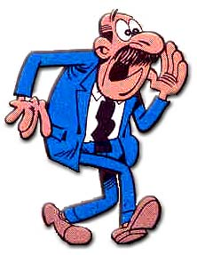

El Super
 De: La Frikipedia, la enciclopedia extremadamente seria.
De: La Frikipedia, la enciclopedia extremadamente seria.
También conocido como superintendente Vicente(joder eso rima),y para sus subordinados como 'el hijoputa ese'.Pertenece a la especie "homo mandatus pesadus".
 El Super Intendente Vicente, mandando, para variar.
Es el mandamas de la TIA(Tecnicos en Investigacion ¿Aeroterraquea?),y es el prototipo de jefe gilipollas.
Al salir en los tebeos de Mortadelo y Filemón,es el personaje menos gracioso,ya que 'el hijoputa ese' es un tirano de cataplines.Es tonto como un arao palo y no tiene...sentimientos.
Historia
Sacado del libro 'Guia para la Vida de un Agente de la TIA'.
Ojo:Todo rima.
- Arribo al mundo el muchacho ya pelón y con mostacho.
- Pronto fue desarrollando su inclinación por el mando.
- En la escuela de la Escala ya mandaba cosa mala.
- El mando al final desata su aversión a la patata.
- Vuelve a lo civil,con brío...¡y aun quiere mandar,el tio!
- Va y se casa en Calahorra y ya no manda ni a la porra.
- Comienza un aciago dia a obedecer en la TIA.
- Al tratar con el Bacterio(el biólogo),se aproxima al cementerio.
- Cuando intenta darse el lote,¡ojos como chapapote!
- Al lidiar con Filemón,ya roza extremaunción(ni idea de que es,sera algo malo).
- ¿Mortadelo?¡la locura!¡Directo a la sepultura!
- Y entre quejido y suspiro,espera el dia del retiro.
Segun mi punto de vista,este tio es un raro suicida.
La tirania que ejerce
Su obsesion por mandar puede acabar convertiendole en un Bush de armas tomar,incluso se pasa la vida haciendo el vago,bebiendo whiskis,vinos y coñac;fumandose peaso de canutos con marca de mierda,e incluso a mandar a cualquiera a tomar por culo;bueno,a cualquiera menos al director general,claro esta.
Antes de la llegada del super a la TIA
Era un maldito putiferio;sino,¿por que puñetas se le llamaba a eso TIA?
Despues de la llegada del super a la TIA y antes de la de Mortadelo y Filemón
Eso dejo de ser un putiferio para convertirse luego en un manicomio.Se dice que la mas prostituta de aquel lugar es ahora la esposa del super,y la menos prostituta,la del dire.
Despues de la llegada de Mortadelo y Filemón
Aquel manicomio se convirtió en una masacre de locos.
Ademas,después de echar(o quedarse)a algunas prostitutas,las sustituyo por agentes secretos a los que,si os habéis dado cuenta,acaban en -ez(Bestiajez,Migajez,Mantequez,Correveydilez...).Aunque hay agentes que no tienen esta caracteristica,como el agente Garcia y el agente Floro.Se sospecha que sean agentes enemigos infiltrados de la ABUELA(Agentes Bélicos ¿Ultramarinos? Especialistas en Lios ¿Aberrantes?)también conocidos como 'nietos'.Existen pruebas de que la TIA y la ABUELA son organizaciones rivales,como Nintendo y Sega,que intentaron resolver sus diferencias mediante un partido de fútbol(patético) y nanai,ya que el super no tenia ni chota idea de fútbol y lió una gorda.
Caracteristicas y cualidades
Caracteristicas
- Esta calvo por arriba(joder,y dicen que Mortadelo es el unico que esta too calvo;pero no saben que el Bacterio también lo esta aunque tenga barba.¿Y que pasa con Filemón que solo tiene dos pelos?¿Es que eso es no ser calvo o que?)
- Su mostacho es clavaito al de una morsa,al de Mario y hasta al de Aznar.
- Aunque sea malhumorado y un mono histérico,es el único que no ha criticado al niñato del metro de Valencia en el Youtube.
- Viste con un traje de Poco Rabbano(Paco Rabbane).
- Sus zapatos son de Armani con suela ultrablindada de Mithrill,como los de Mario,pero estos son del mercadillo;osease,defectuosos.
- Es un loro,ya que siempre les dice a Mortadelo y Filemón:'Ya hablaremos de esto'.Esperemos que de tanto hablar se quede afónico.
Cualidades
- Mandar
- Joder(lo mismo que mandar)
- Beber
- Chupar
- Mandar(otra vez)
- Tocar las pelotas(lo mismo que joder y mandar)
- Fumar
- Abrir expendientes
- Despedir
- Mandar(le gusta al tirano ese)
- Dormir a pata suelta.
- No darles el sueldo a sus subordinados
- Mandar(bueno,ya esta bien,no)
- Dar por saco a los mas tontos de la organización (Mortadelo y Filemón)
- Mandar(a tomar por culo,lo mismo que despedir).
- Escupirte
- No bañarse
- Hecharse pedos
- Engordar
Cuidadin,porque si tu jefe o proferor (si eres estudiante) reune todas estas cualidades,sal repartiendo leches hacia un lugar lejano.
Autor(es):
- Pyrokar
- Azulejos
- MarioDS
- Cibercrank
- Genericool
- Jmmj
- Sakki
Frikipedia 2005-2016, Licencia
GFDL 1.2 - Extraído por FrikiLeaks